Morioka
Morioka · Iwate
Morioka
Highlighted on the Iwate map.
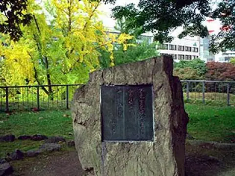
Stay
ダイワロイネットホテル盛岡駅前
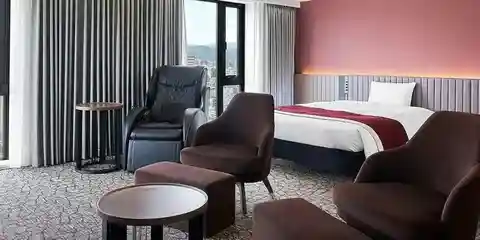
Daiwaroinettohoteru Morioka Ekimae
Hotel in Morioka, Iwate.
Dining
Ristorante SHIKAZAWA
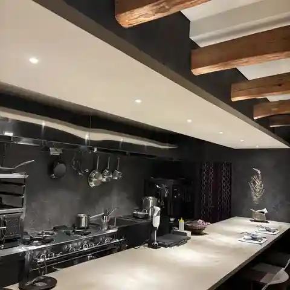
Ristorante Shikazawa
Italian restaurant in Morioka, Iwate.
filo
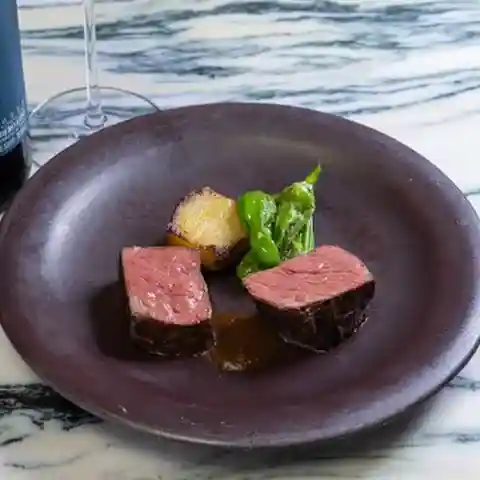
Filo
Italian restaurant in Morioka, Iwate.
シェムラブルリス
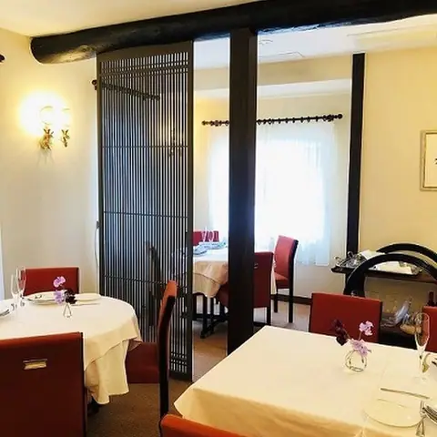
Shiemurabururisu
French restaurant in Morioka, Iwate.
盛楼閣
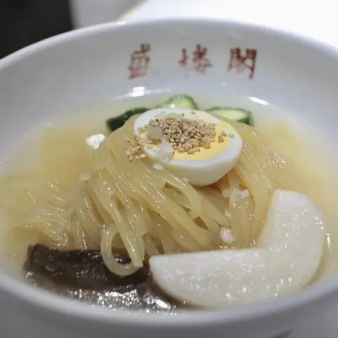
Jou Roukaku
Yakiniku (grilled meat) restaurant in Morioka, Iwate.
大同苑 盛岡総本店
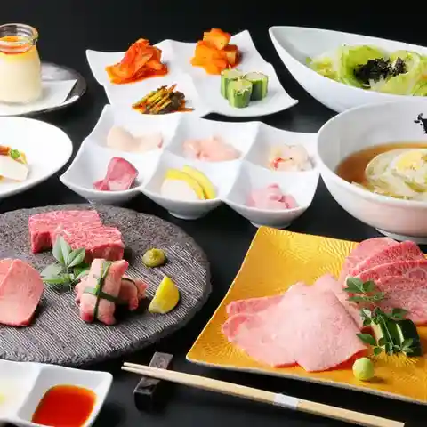
Daidou En Morioka Souhonten
Yakiniku (grilled meat) restaurant in Morioka, Iwate.
福田パン 長田町本店
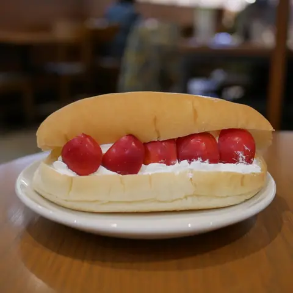
Fukuda Pan Nagata Machi Honten
Bakery in Morioka, Iwate.
食道園
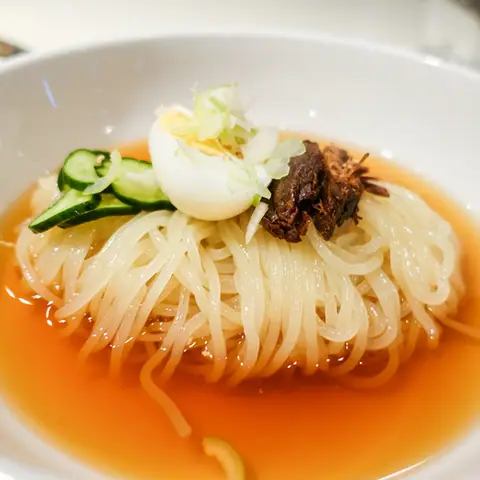
Shokudou Sono
Yakiniku (grilled meat) restaurant in Morioka, Iwate.
らあめん サンド
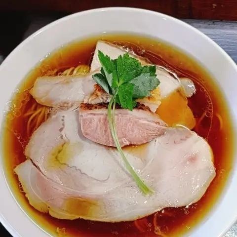
Raamen Sando
Ramen shop in Morioka, Iwate.
The bar 佐藤
The Bar Satou
Bar in Morioka, Iwate.
やまや
Yamaya
Soba restaurant in Morioka, Iwate.
玉山支所前食堂
Tamayama Shisho Zenshoku Dou
Motsunabe restaurant in Morioka, Iwate.
味の店 いわし
Aji No Mise Iwashi
Izakaya in Morioka, Iwate.
かかし屋
Kakashi Ya
Izakaya in Morioka, Iwate.
うなぎ 善
Unagi Zen
Eel restaurant in Morioka, Iwate.
ステーキ・鉄板料理 和かな 盛岡本店
Suteeki Teppan Ryouri Wa Kana Morioka Honten
Steakhouse in Morioka, Iwate.
DADA
Dada
French restaurant in Morioka, Iwate.
光原社 可否館
Kougen Sha Kahi Kan
Coffee shop in Morioka, Iwate.
Golot
Golot
Steakhouse in Morioka, Iwate.
虎きよ
Tora Kiyo
Yakiniku (grilled meat) restaurant in Morioka, Iwate.
AZUMANESOKO 盛岡店
Azumanesoko Morioka Mise
Bistro in Morioka, Iwate.
mass かまどのある家 酒をよぶ食卓
Mass Kamadonoaru Ie Sake Woyobu Shokutaku
Izakaya in Morioka, Iwate.
焼肉せがわ
Yakiniku Segawa
Yakiniku (grilled meat) restaurant in Morioka, Iwate.
ななしの庵
Nanashino Iori
Creative-cuisine restaurant in Morioka, Iwate.
番屋ながさわ
Banya Nagasawa
Izakaya in Morioka, Iwate.
Sights
Pyonpyonsha Inaricho Main Store
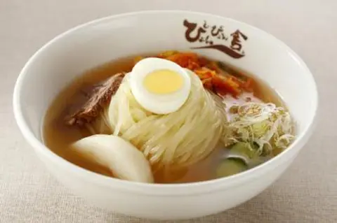
Yakiniku cold noodle restaurant. Made with high-quality potato starch, the noodles are chewy and smooth and go down smoothly, with a rich, natural soup made with plenty of fresh beef bones and chicken, and a special kimchi with sour and spiciness.
Restaurant Pioneer Ranch
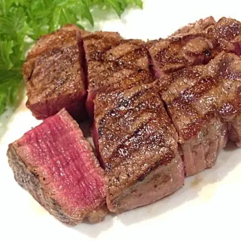
We offer a variety of menus, including Iwate Tankaku Beef steaks, as well as premium 100% Iwate Wagyu hamburgers and hamburgers made with our special demi-glace sauce, as well as wine.
Taya Orchard
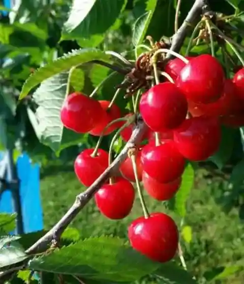
An orchard on a small hill overlooking Mt. Iwate and the Kitakami River.
Iwado Lake Rest House
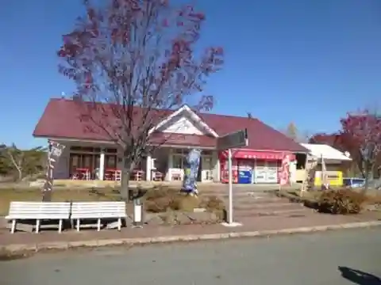
Soba is the best health food that can be grown without using pesticides.
Asajima sightseeing apple orchard
You can enjoy picking several types of apples at the scenic apple orchard.
Morioka Reimen (Cold Noodles)
Cold noodles originally originated in the northern part of the Korean peninsula, but Teruto Aoki, who was originally from Hamheung in the northern part of the peninsula and immigrated to Japan, opened a restaurant called "Shodoen" in Morioka in 1955 (which…
Shokudoen
Founded in 1954, this is the original yakiniku cold noodle restaurant of Morioka cold noodles.
Azumaya
On November 24, 2020, our newly renovated main store opened!
Michinoku Coca-Cola Bottling Link (Morioka City Ice Rink)
Michinoku Coca-Cola Bottling Link (Morioka City Ice Rink)
Morioka Dagashi Sekiguchiya Confectionery
Morioka Dagashi Sekiguchiya Confectionery
Morioka Jajamen (Morioka City)
Morioka Jajamen is boiled piping hot noodles topped with meat miso.
Daimaruya Murata Confectionery
Daimaruya Co., Ltd. Murata Confectionery Store
Zaimokucho Yo-ichi Evening Market
During the feudal period, there were markets all over Morioka Castle.
Meimeiya
Our cold noodles, which are made with carefully selected chewy noodles that have a thorough pursuit of flavor, are now available for shipping nationwide.
Yakiniku/Morioka Reimen Hige
We are proud of our handmade Morioka cold noodles. Soup and kimchi are all homemade.
Kinoene Main Store
A restaurant where you can enjoy Morioka's local cuisine "Nanbu Hatto Nabe".
Daidoen
A restaurant where you can mainly enjoy authentic yakiniku made from Iwate Prefecture Kuroge Wagyu beef and hand-crafted Morioka cold noodles.
Ishikawa Takuboku Poetry Monument (Morioka Castle Ruins Park (Iwate Park))
Ishikawa Takuboku Poetry Monument (Morioka Castle Ruins Park (Iwate Park))
Morioka Tegamikan
This is a unique facility in Japan that stores, researches, and exhibits manuscripts, diaries, etc., mainly letters of our ancestors.
Plaza Odette
This information dissemination base was named after the Morioka dialect for "Please come." In addition to the "
Morioka City Ancestor Memorial Hall
A memorial museum that introduces the predecessors connected to Morioka who were active after the Meiji period.
Morioka Shinkin Bank Main Branch (former savings bank)
Morioka Shinkin Bank Main Branch (former savings bank)
Hara Takashi Memorial Museum
This memorial hall is located on the grounds of the mansion where Takashi Hara, who organized Japan's first political party cabinet and was known as the commoner prime minister, was born.
Miyazawa Kenji Stone Monument (Kogensha)
Miyazawa Kenji Stone Monument (Koharasha)
Kogensha
Kogensha is the publisher of Kenji Miyazawa's collection of children's stories, "Restaurant with Many Orders," published before his death.